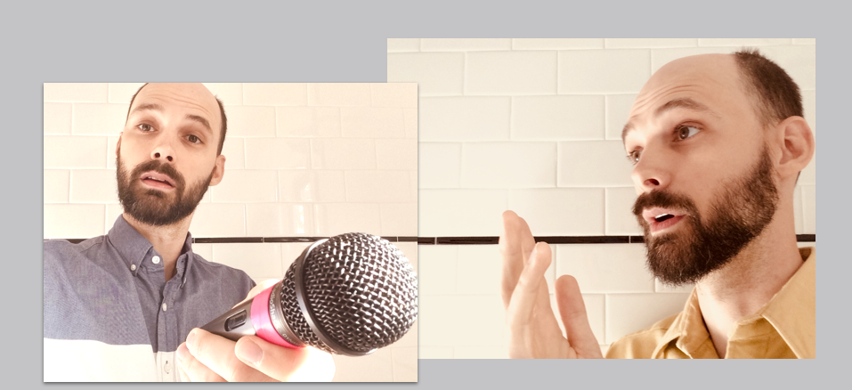
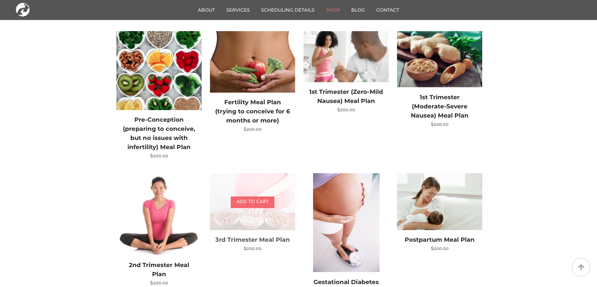

Blog
David Interviews Himself About UX -- 10/15/18
You work in UX, but help me understand specifically what you do.
I’m a generalist, so I have broad experience in UX, but I’m deepest in Information Architecture, Usability, Requirements Gathering, Service Design, Navigation Design, Analysis, and Content Creation/Management (specifically text and photo).
What are some areas to which you’ve been exposed, but want to go deeper into?
I’m curious about Timeline, a interaction design tool plugin for Sketch. I want to dive into Framer. I’d also like to get my JavaScript and React up to the level of my HTML and CSS (where I'm much more comfortable).
What are some of you favorite tools.
As a lot of creative people will attest to, sometimes you need to impose limits on yourself in order to counteract your own innate distractibility. For this reason, I’m intentional about choosing simple, well designed tools. Some examples are Basalmiq which I prefer over Sketch when feasible. I love photo editing in the VSCO iPhone app because you can make great looking edits quickly using the same device just used to take the photo without getting bogged down in tedious workflow. I love the app POP (by Marvel), a really intuitive iPhone app that allows you to create clickable prototypes from photos of paper sketches. My son and I are using it to create his video game right now.
How do you approach new projects?
Every project is different (that’s the interesting part!), but I tend to start with research of some kind - competitor research often. What’s out there already? We can’t build a better mousetrap without understanding what mousetraps are already on the market. So how do they work? Where is there a missed opportunity? And then you have to test with real users because maybe what you thought was a “missed opportunity” is a feature no one actually needs. (And there is no use building things people don't need!) I like to move fast to build functional minimum viable products to prevent getting lost in minutiae too early on. And then iterate as you go.
Can you talk more about your thought process?
Usually I want to zoom out on problems and try to see them from the perspective of a systems thinker. What’s the context? I think if you deeply understand the context, it makes it so much easier to then zoom back in and tackle all the little details. I enjoy the details though; I love to optimize constantly. My Github commits are frequent and contain incremental changes.
What are you most interested in?
I’m interested in meaningful problems, by which I mean that I’d much rather work on improving healthcare delivery rather than helping someone sell more sugar water. There are so many good problems to work on right now: climate change, transportation/mobility, healthcare, technology addiction, sleep, mindfulness, etc. Beyond that, I think that human relationships are really important. That seems obvious, but the more technology we bring into our lives, the more important human relationships become. I love to be in the outdoors with my wife and son, biking, hiking or rock climbing when possible.
Finally, where do you see UX design going?
Well people are betting on Voice and Virtual Reality / Augmented Reality / Mixed Reality. I think because of the backlash to screens that we’re seeing more of (and because of an increasing awareness of screen addiction), I think we’ll see Voice continue to grow. Clearly AI and robotics will aide that. At the same time it’s still pretty hard to actually get work done with Voice, so screens aren’t leaving business (ie enterprise) anytime soon. As far as VR/AR I was bearish on that until I saw how Roomered was using it to create highly realistic virtual environments for builders to sell unbuilt houses. I understand its also being used to create cloud-like environments for burn victims in order to cut down on use of painkillers. So its clearly not just going to be for gamers.
Thanks for your time today, David.
Absolutely. Happy to help, David.
#UX #design #sketch #systemsthinking

PROCESS: Designing and Building a Better Recruiting Web App to Evaluate Developers -- 7/31/18
I wanted to write a bit about some of the challenges designing and building the working prototype of Rate That Dev. One night, laying awake in bed, I found myself thinking about some of the many places of friction in the current IT recruiting space. I had had a conversation recently with a recruiter, from which I came to understand just how tedious it can be to find someone that 1) has the relevant skills 2) has been vetted by someone with those same skills 3) will fit in the culture of the company or team. I thought it would be interesting to get together with a few developer friends of mine and build a straight-forward FullStack app that would allow Developers to rate each other (with appropriate safeguards) and allow Recruiters/CTOs/HR to see the Devs' self ratings alongside ratings from their peers. After writing some quick copy I put a bunch on notecards on the wall to map out the flow. I could see there were going to be two basic paths, 1) the path that developers would take to create a profile, rating themselves and others along the way and 2) the very succint path that recruiters would need to take easily enter the search criteria to find a sorted list (starting with best fit) of the developer with precisely the desired skills. After pitching the idea to my team, we decided to move forward trying to build it. We presented a powerpoint to other developers just before we had a working prototype, because we wanted to gauge how they felt about being rated anonymously (a feature considered important for collecting meaningful data). With their feedback in tow, we did some guerilla research with Recruiters and CTOs who suggested the ideas for 2 important features: the ability to do Boolean Searches (ex: Angular OR React) and the ability to view a short video of the developer presenting something - anything. The latter would allow recruiters to get some of the info currently obtained by phone screens.
#UX #UI #prototyping #FullStack #Mongo #Express #React #Node.js #MERN
 Meal Plans" />
PROCESS: Aspiration vs. Execution...Finding out why our Meal Plans weren't being cooked -- 5/10/17
I wanted use a case study to illustrate the difficulty of making a product that your user claims to want (even though this may turn out to not be the case). Here is a little bit about creating condition-specific meal plans for Holistic Wellness.
#CaseStudy #Usability #Research #Interviewing
Creating Content for Video -- 6/12/15
The Brand Identity video is out today for Holistic Wellness and it looks great. Dr. Kate and I spent a couple weeks writing scripts, and thinking about the kinds of shots that would need to be included in the storyboarding. I thought it was important to convey her connection to nature with shots of Dallas-area greenery as well as using the edge of a desktop computer and a carefully curated bookcase to project her deep understanding of science and women's health. Justin P. Hamilton did a fantastic job shooting and directing and cutting it all together. I did the audio editing and music for this one.
#BrandIdentity #Storyboarding #Screenwriting #SoundDesign #GoogleDocs #ProductManagement